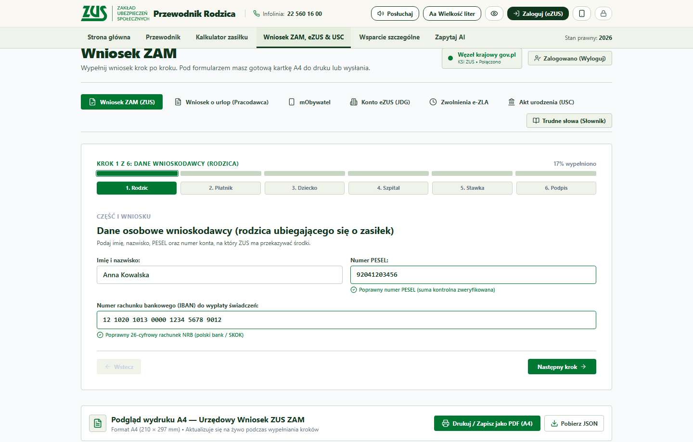
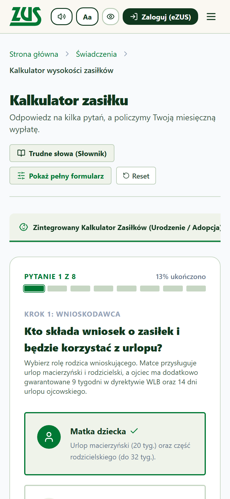

HACKNATION 2026 · WYZWANIE ZUS
Zasiłkowy Przewodnik
Przyszłego Rodzica
Zobacz na przykładzie Anny (etat) i Tomka (JDG), jak w kilka minut sprawdzić wysokość zasiłku, poznać terminy i przygotować gotowe wnioski.
Kalkulator świadczeń 2026
Wniosek ZAM & Urlop HR
Wersja web i mobile
demo · przewodnik-rodzica-zus /
KROK 1 · WYBÓR SYTUACJI

demo · przewodnik-rodzica-zus /kalkulator
KROK 2 · KALKULATOR (PORÓD, ADOPCJA, JDG)
demo · przewodnik-rodzica-zus /kalkulator
KROK 3 · WYNIK ANNY: 5 274 ZŁ / M-C · 76 532 ZŁ ŁĄCZNIE
5 274 zł / mies. · 76 532 zł łącznie · 9 tyg. dla Tomka
demo · przewodnik-rodzica-zus /e-uslugi
KROK 4 · GOTOWY WNIOSEK ZAM (A4) & URLOP DO PRACODAWCY


demo · przewodnik-rodzica-zus /asystent-ai
KROK 5 · SERWEROWY DORADCA (/api/chat)
demo · przewodnik-rodzica-zus /jury-sandbox
KROK 6 · WERYFIKACJA PDF (WCZEŚNIAK + 10 TYG.)


HACKNATION 2026 · WYZWANIE ZUS
Zasiłkowy Przewodnik
Przyszłego Rodzica
Od pytania „ile dostanę?” do gotowego wniosku ZAM i urlopu u pracodawcy — na komputerze i telefonie.
Repo: github.com/theZabkka/przewodnik-rodzica-zus
REST API: /api/calculate · /api/chat · /api/parameters
Stan prawny 2026 · 40/40 testów Vitest